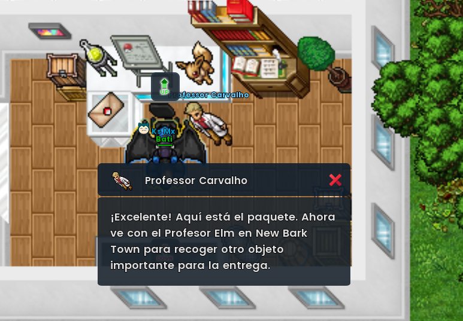
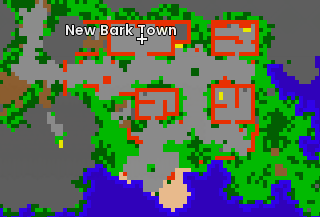
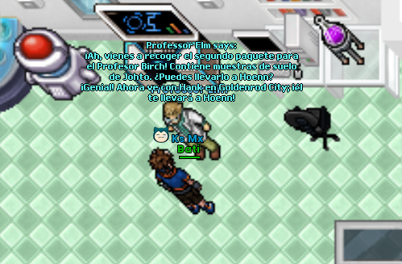
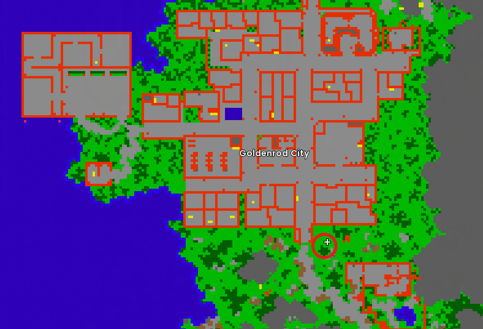
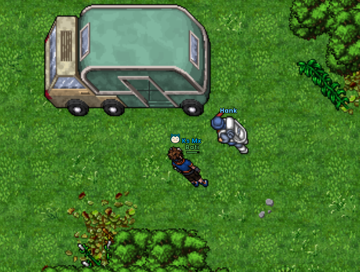
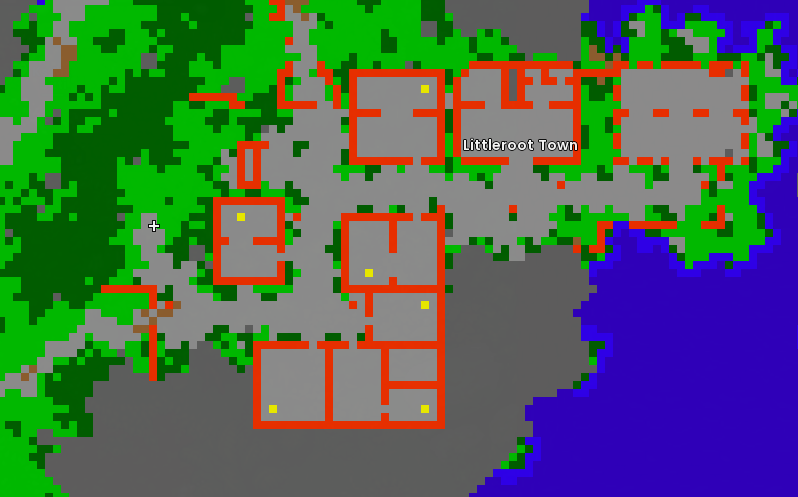

Acceso a Hoenn
Cadena de viaje que comienza con Professor Oak y continúa por Johto hasta habilitar la progresión de Hoenn.
1. Professor Oak
La cadena comienza con Professor Oak en Pallet Town. Tras hablar con él, recibes un paquete que debe llevarse a Professor Elm en New Bark Town.

2. Professor Elm
Viaja al laboratorio de New Bark Town y habla con Professor Elm. La referencia proporcionada indica que entrega el segundo paquete destinado a Professor Birch y dirige al jugador hacia Goldenrod.


3. Goldenrod y Hank
Ve a Goldenrod City, utiliza la salida sur y busca el tráiler a la derecha. Ahí está Hank.


Interactúa con la puerta del tráiler para continuar el viaje.
4. Llegada a Hoenn
El traslado lleva a Hoenn, con referencia visual en Littleroot Town.

Progreso y recompensa
La quest habilita la progresión de Hoenn. La información compartida también señala como recompensa un huevo aleatorio de Mudkip, Treecko o Torchic.